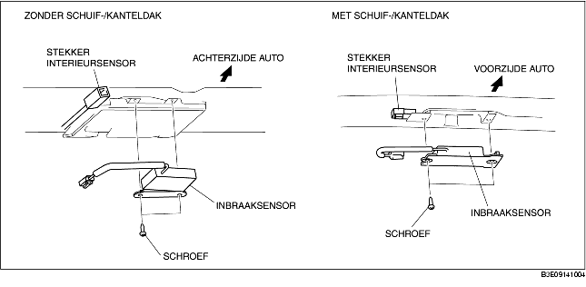

VERWIJDEREN/PLAATSEN INTERIEURSENSOR
B3E091400172W01
1. Neem de minkabel van de accu los.
2. Verwijder de volgende onderdelen:
-
(1) Lasnaad schuif-/kanteldak (uitvoeringen met schuif-/kanteldak)
-
(2) Middenconsole (4AD) (Zie VERWIJDEREN/PLAATSEN MIDDENCONSOLE.)
-
(3) A-stijlbekleding (Zie VERWIJDEREN/PLAATSEN A-STIJLBEKLEDING.)
-
(4) Bovenste bevestigingspunt veiligheidsgordel vóór (Zie VERWIJDEREN/PLAATSEN VEILIGHEIDSGORDEL VÓÓR.)
-
(5) Dorpellijst vóór (Zie VERWIJDEREN/PLAATSEN DORPELLIJST VOOR.)
-
(6) Dorpellijst achter (Zie VERWIJDEREN/PLAATSEN DORPELLIJST ACHTER.)
-
(7) Onderste deel B-stijlbekleding (Zie VERWIJDEREN/PLAATSEN ONDERSTE B-STIJLBEKLEDING.)
-
(8) Bovenste deel B-stijlbekleding (Zie VERWIJDEREN/PLAATSEN BOVENSTE B-STIJLBEKLEDING.)
-
(9) Achterbank (Zie VERWIJDEREN/PLAATSEN ACHTERBANK.)
-
(10) Bekleding wielkuip (Zie VERWIJDEREN/PLAATSEN BEKLEDING WIELKUIP.)
-
(11) Bovenste zijpaneel bagageruimte (5HB) (Zie VERWIJDEREN/PLAATSEN BOVENSTE ZIJBEKLEDING BAGAGERUIMTE.)
-
(12) C-stijlbekleding (Zie VERWIJDEREN/PLAATSEN C-STIJLBEKLEDING.)
-
(13) Leeslampje (Zie VERWIJDEREN/PLAATSEN LEESLAMPJE.)
-
(14) Interieurverlichting (Zie VERWIJDEREN/PLAATSEN INTERIEURVERLICHTING.)
-
(15) Zonneklep (Zie VERWIJDEREN/PLAATSEN ZONNEKLEP.)
-
(16) Handgreep (Zie VERWIJDEREN/PLAATSEN HANDGREEP.)
3. Neem de stekker van de interieursensor los.
4. Verwijder de schroeven.

5. Verwijder de interieursensor.
6. Plaats de onderdelen in omgekeerde volgorde.